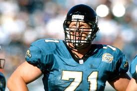
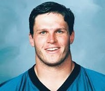

Last updated 30 Jan 2021


Tony Boselli — NFL Lineman (1995-2002)
About Tony Boselli
A shoulder injury caused him to miss most of the 2001 season, a first for Boselli, and it was that injury that cost him his career. He retired in 2002 at the age of 31, saying his left shoulder wouldn't allow him to keep playing.